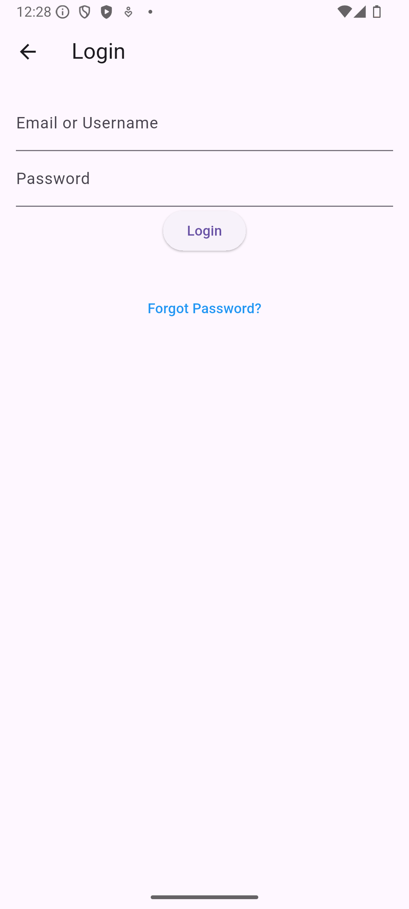
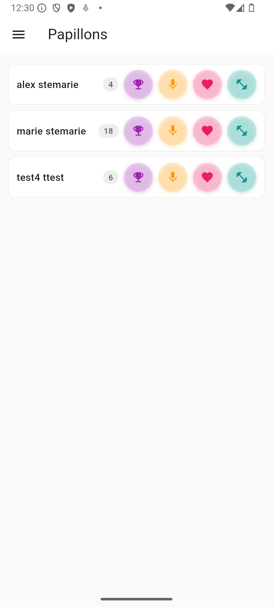
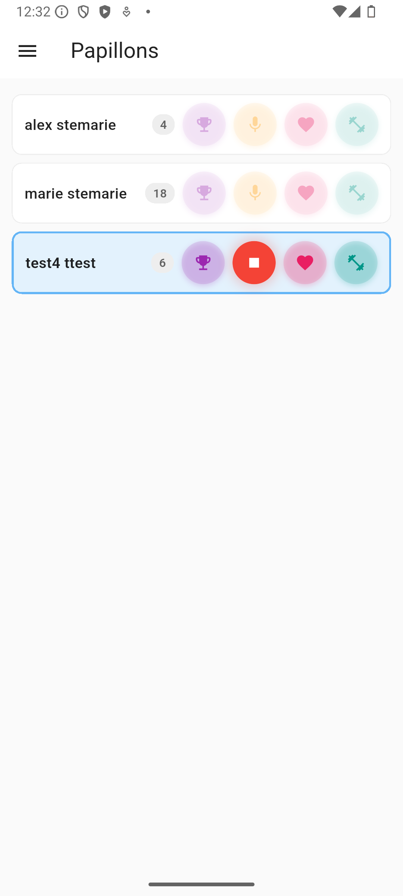
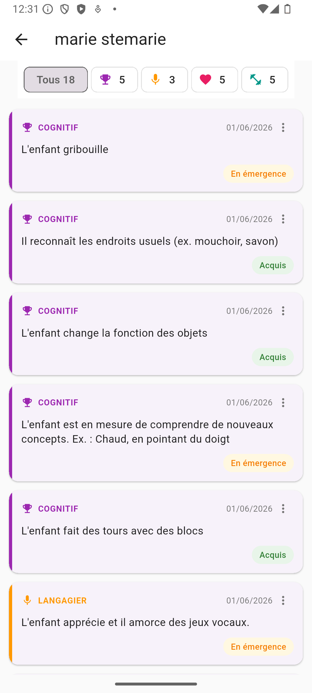

Guide de l'éducatrice
Le portail web et l'application mobile — observer, rédiger, soumettre.
Speakora s'utilise à deux endroits. Le portail web est votre outil principal : c'est là que vous suivez vos enfants, remplissez la grille de développement, puis générez, modifiez et soumettez leurs rapports à la direction. L'application mobile est facultative : elle sert à noter des observations par la voix, sur le vif — mais un rapport complet peut se faire sans jamais l'ouvrir.
Partie 1 — Sur le portail web
1. Créer votre compte
Votre compte se crée dans le navigateur, à partir de l'invitation envoyée par votre direction — pas dans l'application mobile.
- Votre direction vous inscrit à Speakora : vous recevez par courriel une invitation à vous inscrire. Ouvrez le lien — le formulaire d'inscription s'affiche dans votre navigateur, votre adresse courriel déjà remplie.
- Remplissez le formulaire : Prénom, Nom, Nom d'utilisateur (lettres seulement, 3 à 20 caractères) et Mot de passe (au moins 8 caractères, dont une majuscule, une minuscule et un chiffre), puis cliquez sur Créer un compte.
- Ouvrez ensuite le courriel de vérification qui vous est envoyé et cliquez sur le lien (valide 24 heures) : votre compte est activé et rattaché à votre CPE.

2. Se connecter au portail
- Dans votre navigateur, rendez-vous sur admin.speakora.ca.
- Entrez le courriel et le mot de passe de votre compte (créé à la section 1), puis connectez-vous. Vous arrivez sur le Tableau de bord.
Le menu de gauche vous donne accès à quatre sections : Tableau de bord, Enfants, Groupes et Tous les rapports.

3. Vos enfants et vos groupes
La section Enfants liste les enfants de votre CPE. Cliquez sur un enfant pour ouvrir sa fiche, organisée en quatre onglets :
- Aperçu — ses renseignements (nom, groupe, contacts des parents…);
- Rapports — ses rapports de développement, brouillons et finalisés;
- Observations — toutes les observations enregistrées pour cet enfant;
- Grille de développement — la grille à cocher qui alimente ses rapports.
La section Groupes montre les groupes du CPE et l'éducatrice assignée à chacun.

4. Remplir la grille de développement
Dans la fiche de l'enfant, l'onglet Grille de développement présente la grille du groupe d'âge de l'enfant. Cochez les éléments observés au fil de la période, puis enregistrez : ces éléments alimentent directement le rapport — notamment la section Objectifs et orientations, qui se gère depuis cette grille.

5. Générer un rapport
Le rapport de développement se construit à partir de vos observations et de la grille. C'est vous qui le générez, au moment du bilan périodique.
- Dans la fiche de l'enfant, ouvrez l'onglet Rapports et cliquez sur Générer un rapport.
- Dans la fenêtre Générer un rapport de développement, choisissez la période couverte (les trois derniers mois par défaut). La fenêtre indique combien d'observations et d'éléments cochés dans la grille se trouvent dans cette période.
- Cliquez sur Générer un rapport. Après quelques instants, le rapport s'ouvre — c'est un Brouillon : rien n'est encore envoyé.

6. Modifier le rapport
Le rapport s'affiche avec deux onglets : Aperçu, le rendu tel que les parents le recevront, et Modifier, où vous retravaillez chaque section.
- Ouvrez l'onglet Modifier. Chaque section montre le texte proposé par Speakora, que vous pouvez réécrire dans vos mots : le Portrait global de l'enfant, les quatre domaines (Cognitif, Langagier, Socioaffectif, Moteur), les Objectifs et orientations, puis Forces principales, Prochaines étapes et Message aux parents.
- Cliquez sur Enregistrer, puis vérifiez le résultat dans l'onglet Aperçu. Répétez jusqu'à ce que le rapport vous convienne.

7. Envoyer le rapport en révision
Quand le rapport est prêt, vous le soumettez à la direction en le finalisant. C'est elle qui l'approuve et l'envoie aux parents — pas vous.
- Cliquez sur Finaliser (au bas de l'aperçu ou dans l'onglet Modifier) et confirmez. Le rapport passe de Brouillon à Finalisé — prêt pour la révision par un admin.
- La direction le révise, le marque Approuvé par un admin, puis l'envoie aux parents en pièce jointe PDF. Vous pouvez suivre son état (approbation, envoi, livraison) depuis la fiche de l'enfant ou la section Tous les rapports.
Partie 2 — L'application mobile (facultative)
8. Se connecter à l'application
- Ouvrez l'application Speakora sur votre téléphone.
- Entrez le courriel et le mot de passe de votre compte (créé à la section 1) — les mêmes identifiants que sur le portail —, puis appuyez sur le bouton de connexion.

9. L'écran « Mes enfants »
Après la connexion, vous arrivez sur la liste des enfants de votre groupe — son nom s'affiche en haut de l'écran. Pour chaque enfant, vous voyez :
- le nombre d'observations déjà enregistrées (la pastille à côté du nom);
- les quatre boutons ronds, un par catégorie de développement : le trophée (Cognitif), le micro (Langagier), le cœur (Socioaffectif) et l'haltère (Moteur). Chacun lance un enregistrement dans sa catégorie.

10. Enregistrer une observation
C'est la force de l'application : vous parlez, Speakora transcrit et classe l'observation automatiquement — sans quitter la liste de vos enfants.
- Sur la ligne de l'enfant, appuyez sur le bouton de la catégorie qui correspond à ce que vous venez d'observer (par exemple le micro pour Langagier). Le bouton devient un bouton d'arrêt rouge et la ligne de l'enfant est mise en évidence.
- Décrivez ce que vous avez observé, dans vos mots, comme si vous le racontiez à une collègue.
- Appuyez de nouveau sur le bouton pour arrêter. Speakora transcrit votre voix et sauvegarde l'observation automatiquement — le compteur de l'enfant augmente de un, et il n'y a rien d'autre à faire.

11. Consulter et gérer les observations
Appuyez sur le nom d'un enfant pour voir toutes ses observations.
- Filtrer — utilisez la pastille Tous ou la pastille d'une catégorie (trophée, micro, cœur, haltère) pour n'afficher que celle-ci. Le nombre d'observations est indiqué sur chaque pastille.
- Changer le statut — chaque observation porte un statut de développement, Acquis ou En émergence. Pour le changer, ouvrez le menu ⋮ de la carte et choisissez Marquer comme.
- Supprimer — dans le même menu ⋮, choisissez Supprimer si vous vous êtes trompée, puis confirmez. Attention : Cette action est irréversible.

12. Questions fréquentes
Dois-je absolument utiliser l'application mobile?
Non. La grille de développement et l'onglet Modifier du rapport permettent de produire un rapport complet sans jamais ouvrir l'application. Elle reste toutefois le moyen le plus rapide de noter une observation sur le vif, par la voix.
Puis-je envoyer moi-même le rapport aux parents?
Non. Une fois le rapport Finalisé, un administrateur doit le marquer Approuvé par un admin avant de pouvoir l'Envoyer aux parents. Si des changements sont demandés, cliquez sur Repasser en brouillon, retravaillez le rapport, puis finalisez-le de nouveau.
Je ne vois pas les sections Équipe ou Code QR dans le portail.
C'est normal : ces sections sont réservées aux administrateurs. Votre menu comprend Tableau de bord, Enfants, Groupes et Tous les rapports.
Dois-je choisir la « bonne » catégorie avant de parler?
Choisissez celle qui vous semble la plus proche — c'est elle qui classe l'observation. Si vous vous trompez, vous pouvez supprimer l'observation et la réenregistrer dans la bonne catégorie.
Que se passe-t-il avec mes observations?
Elles alimentent le rapport de développement périodique de l'enfant — celui que vous générez et modifiez sur le portail (sections 5 et 6), puis que la direction approuve et envoie aux parents.
Je ne peux plus modifier une observation, pourquoi?
Le rapport de la période a probablement été finalisé (voir la section 7). Les observations de la période sont alors verrouillées (mention Observation verrouillée — rapport finalisé). Pour les modifier, il faut d'abord repasser le rapport en brouillon.
Un enfant n'apparaît pas dans ma liste.
La liste affiche les enfants des groupes qui vous sont assignés. Demandez à votre direction de vérifier le groupe de l'enfant dans la section Groupes du portail.